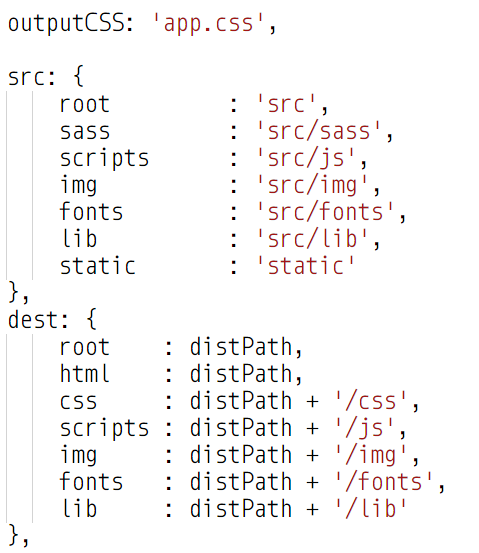

Чем будет полезен вам доклад
Эффективно решать задачи
Сэкономите уйму времени
Ваши нервные клетки скажут вам "Спасибо" ;-)
О чем доклад ?
Не дать готовое решение
Показать ход мысли
Куда "копать"
Где грабли
Boilerplate === Шаблонный код
А примеры ?
Что предлагают существующие решения?
- Слишком много лишнего
- Фреймворки
- Плагины
- Шаблонизаторы
- Лишние препроцессоры
- Слишком мало
- Очень простые
- Чего-то нехватает
- Слишком старые
Какие выводы можно сделать ?
Как это работает ?!?!
Нужно разобраться !
Что должен уметь наш Boilerplate ?
- SASS/SCSS
- Image Optimization
- Минимизация/Конкатинация
- Режим разработки
- Сборка для Production
Основная схема работы Boilerplate
- Парсинг и преобразование кода
- Копирование в output директорию
- Запуск сервера и livereload
но прежде чем...
Что такое Task Manager ?
Инструмент, позволяющий автоматизировать повторяющиеся задачи.
Какие вы знаете ?

Уточним некоторые моменты...
- node.js ?
- npm
- npm init
- package.json

С чего начать ?
HTML5 Boilerplate
https://html5boilerplate.com
Installing Gulp:
npm install gulp-cli -g
npm install gulp -D
touch gulpfile.js
require-dir
npm i -D require-dir
package.json
P.S. Умеем ставить пакеты :-)
run-sequence
- Выполняет последовательность задач gulp в указанном порядке
- Каждый аргумент run-sequence выполняется по порядку
- Вы все равно можете выполнять некоторые из задач параллельно, предоставляя массив имен задач для одного или нескольких аргументов
Не забываем про установку ;-)
npm i -D run-sequence

build.js

config.js

Для чего еще можно использовать config.js ?


Вернемся к таскам
- clean
- styles
- images
- webpack
- copy
clean.js
Сюрприз ;-)
Кода не будет
Таск должен очищать target директорию
Проявите смекалку и фантазию ;-)
styles.js

images.js
Конфиг покажу
Но рассказывать не буду ;-)
images.js

Что тут происходит ?
Вернемся к таскам
- clean
- styles
- images
- webpack
webpack
npm install --save-dev webpack
npm i -D webpack

Что это нам даст ?
а вот что...
$('.someSelector');
просто...
Без импортов !
Что это нам даст ?
а вот что...
import TweenMax from 'TweenMax';
просто...
Без указания полного пути
Как теперь это все подключить?
да как...
Что забыли ?
./gulp/tasks/webpack.js
Вернемся к таскам
- clean
- styles
- images
- webpack
- copy
copy.js
Конфиг - покажу
Но не весь ;-)
Что осталось ?
Свести все воедино!
build.js
run-sequence
- clean
- styles
- images
- webpack
- copy
Остался сервер...
НО
Вы же уже большие и умные ;-)
Ну вы поняли... ;-)
копать browser-sync
Поздравляю!
Вставить гифку с работой...
Рано радуетесь :-)
Как можно улучшить ?
Что можно добавить ?
Скрипты запуска
Linter
FTP
...
Что хотелось сказать в конце...
Чему мы научились:
Узнали что такое Boilerplate
Как эффективно конфигурить Gulp
Как юзать webpack на благо вiтчизни
...
Спасибо!
Тут мои контакты будут...
Я обещал не давать готовое решение...
Я соврал ;-)
Только Тссс !